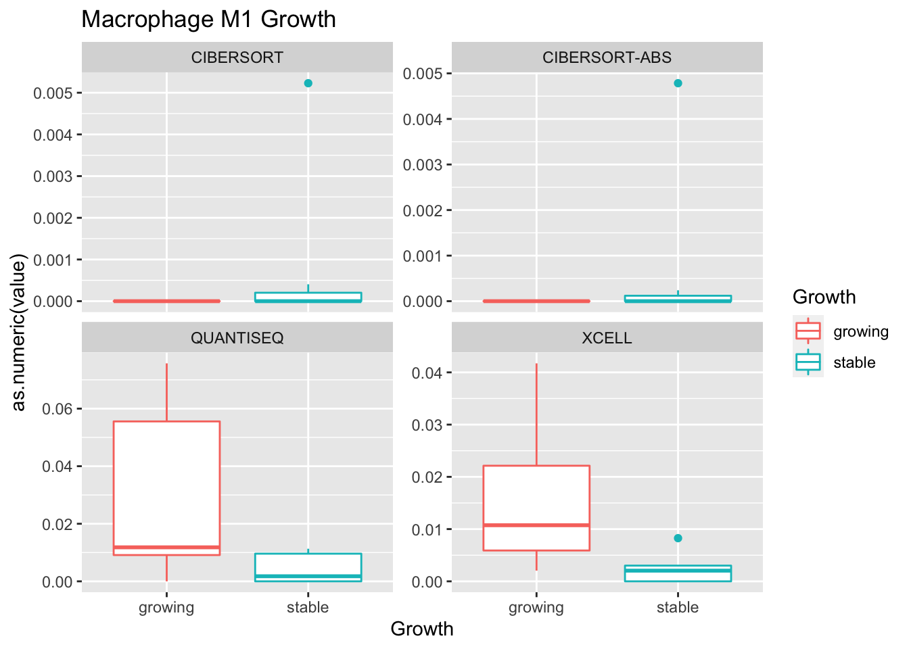
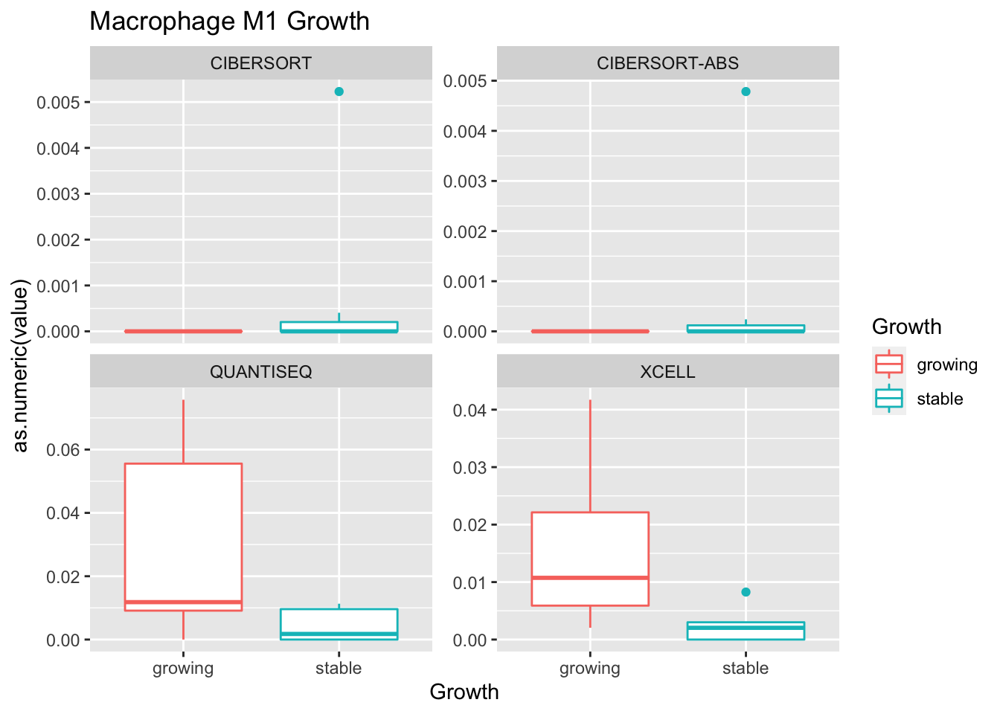
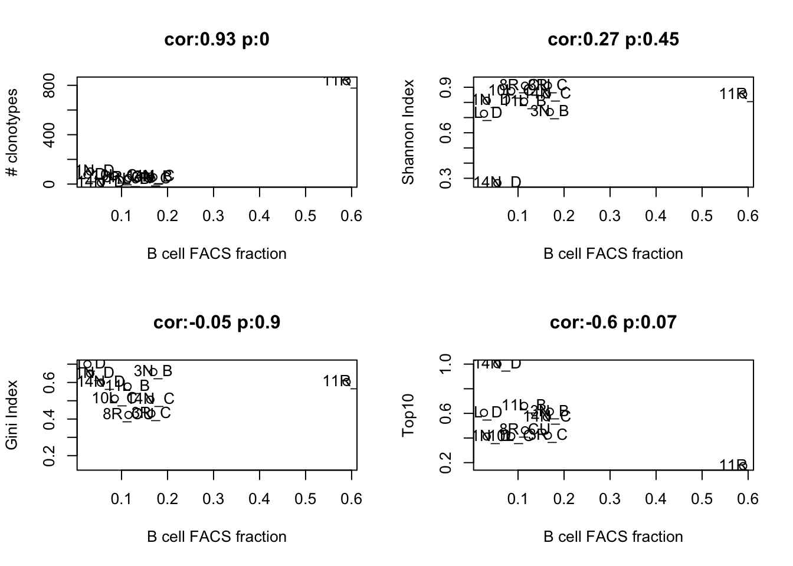
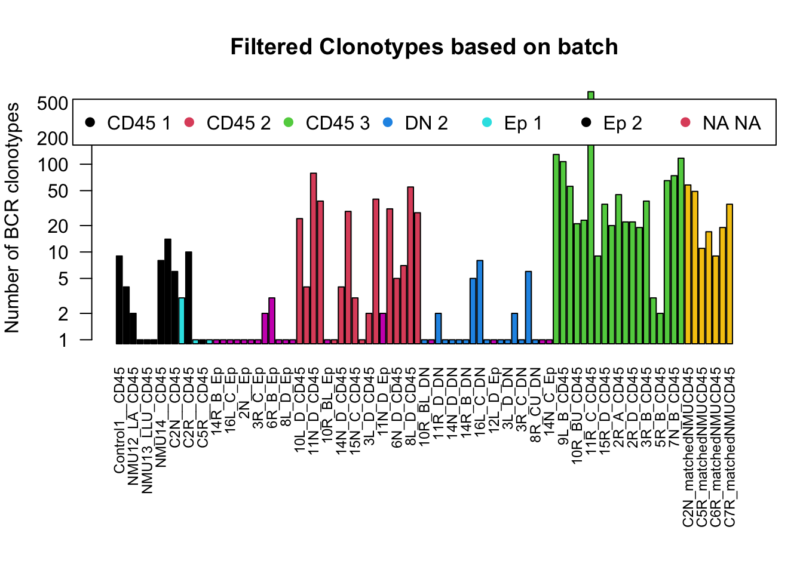
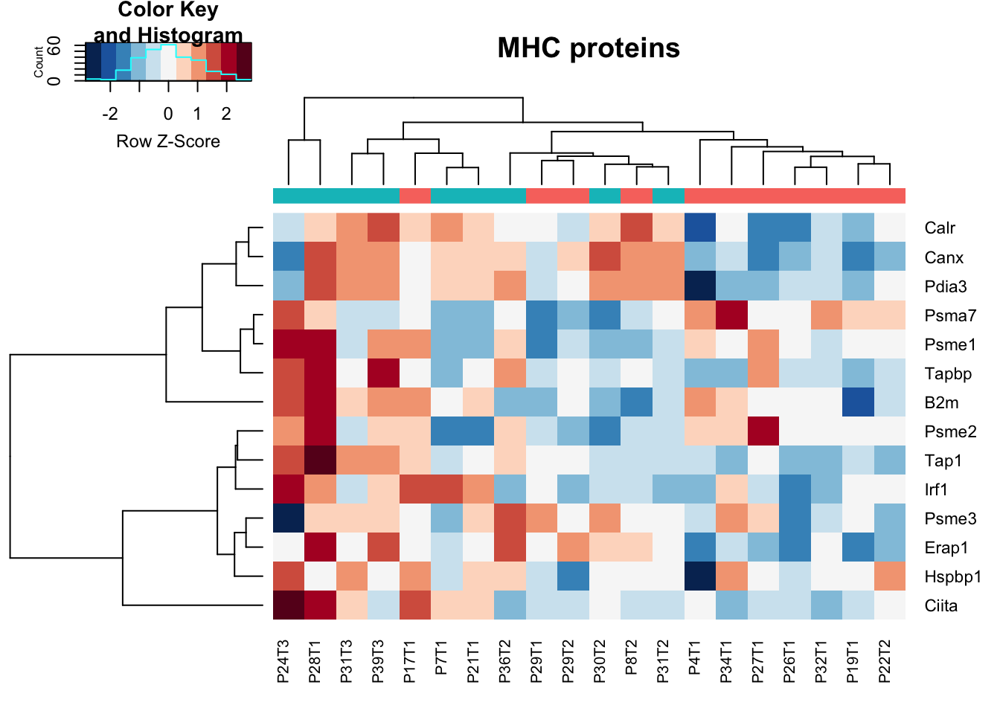
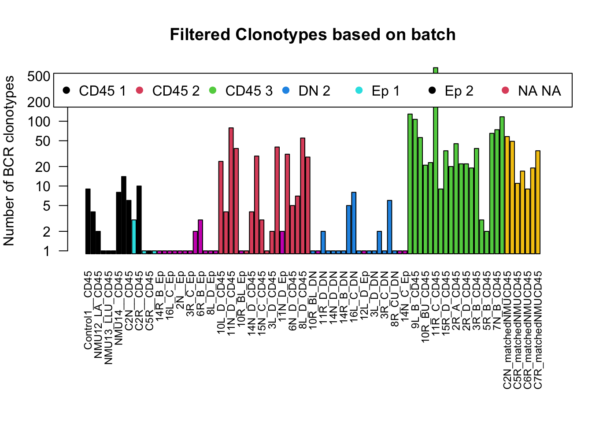
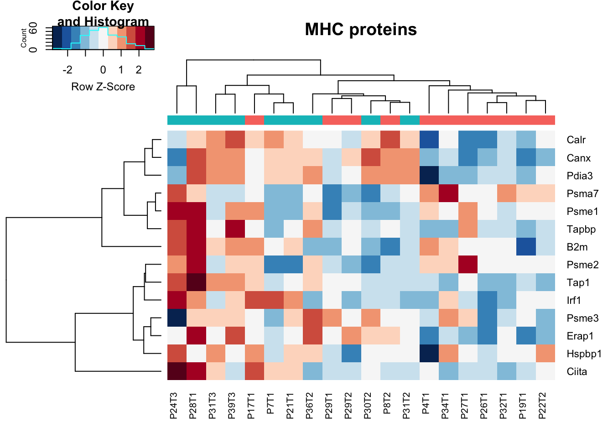
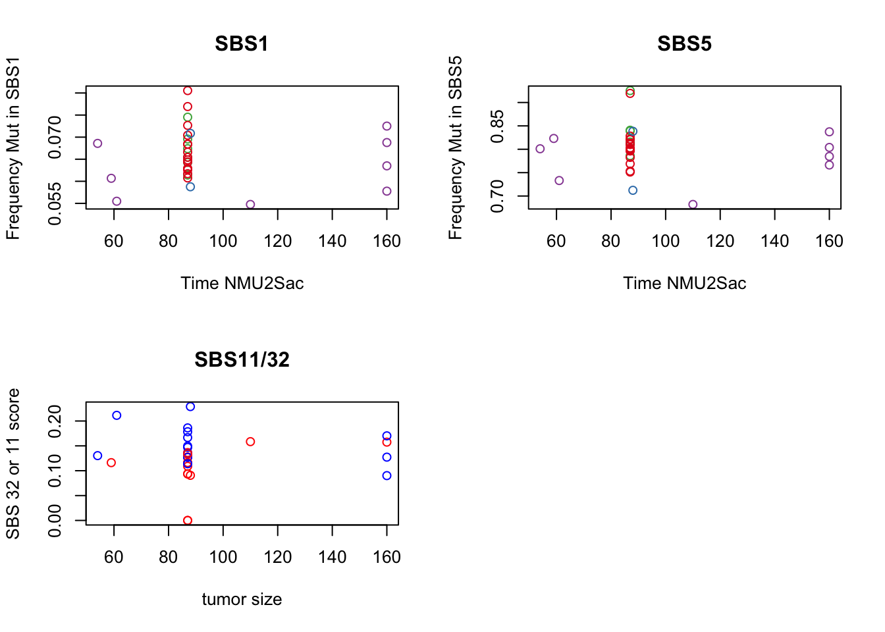
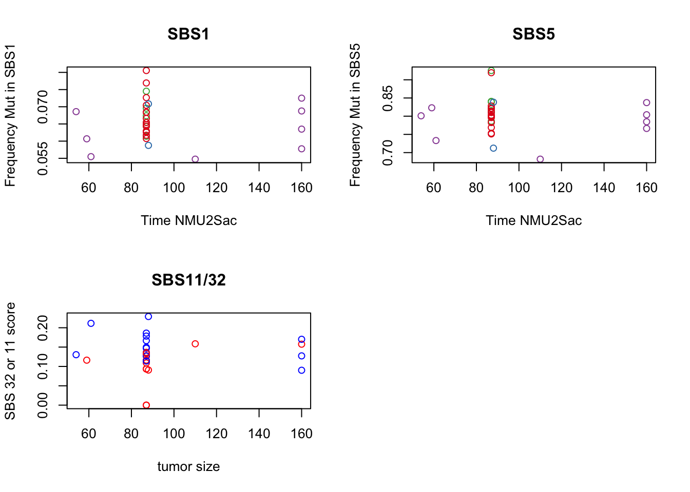

Chapter 12 BCR clonotype analysis
12.1 Load in files of interest
Fastq files have previously been run through TRUST4 using the Rn6 BCR annotations using the following code (not run here). Note that the bcr/tcr .fa files were assembled using the ensembl annotation (these annotations are not present in the UCSC genomic files). Annotation files for the rn6 BCR regions are available at IMGT, but TCR regions are not available
Annotation file: Load in an annotation file indicating all the samples, batch effects etc
12.2 Summary Stats
Firstly, look at the number of BCR regions which have been identified by TRUST4. In green are the CD45 populations, which as expected appear to have a higher number of clonotypes compared to the epithelial and the double-negative populations (in read and orange).
 

We will refine the above plot to contain only the CD45 population and assess:
- number of clonotypes
- number of clonotypes with at least 2 reads
- number of clonotypes which have a complete CDR3a region
Note: although this does not look like a big drop, the data is plotted on a log-scale. For example, in the control 4 (first column) a quarter of the clonotypes have at least 2 counts and about half have a complete CDR3 sequence.
For the following analyses, the clonotypes are filtered to only clonotypes with at least 2 supporting reads and a complete VDJ read . When applying this restriction, we have the following distribution of BCR regions. Almost all the epithelial cases do not have supporting reads, and few of the DN cases have supporting reads too.
12.3 Diversity metrics
We will assess BCR diversity using the following metrics:
** Shannon index **
The shannon index is computed by:
- filtering through reads of interest
- recalculate the fraction such that the new list sums to 1
- compute entropy as the sum of log(freq_x)*freq_x amongst all populations x
- compute the maximum entropy expected for that case -log(1/N), where N is the number of populations present
- to determine confidence intervals, bootstrap the population (500 times) and compute the expected entropy
** Gini index **
The Gini index can be considered as an inverse of the Shannon index
** Top Clonotypes **
We will see the proportion of the BCR repertoire which is computed using the top 10 frequent clones. This will give an idea of whether there is a clonal expansion
The following plot demonstrates the relationship between the above metrics

Notice that some samples have very few clones. An example is 5RB which is represented by a single clonotype, accounting for the absence of a Gini or shannon index
12.4 Compare the characterisation cohort
In the characterisation cohort, we have 3 cases which have CD45 samples in both the tumor and a matched NMU treated mammary gland. Is there a difference in the clonotypes between these samples?


12.5 Associate with clinicopathological data
We will associate the following metrics: * total unique clones * diversity
with the following immune data: * CD45 fraction (from FACS) * CD8 fraction (from WSI) * MH-mixing indices * Tumor Size * Growth * Treatment
 

12.6 Associate with signature scores
Compare to B cell counts and activation status based on RNA-seq
- B cell signature enrichments scores (from RNA data)
 

- B cell frequencies based on FACS:

12.7 Check whether the clonotype percentages match with gsva signatures or CD20 populations
associate with immune signature scores (ssgsea) fdr adjust the correlation p values